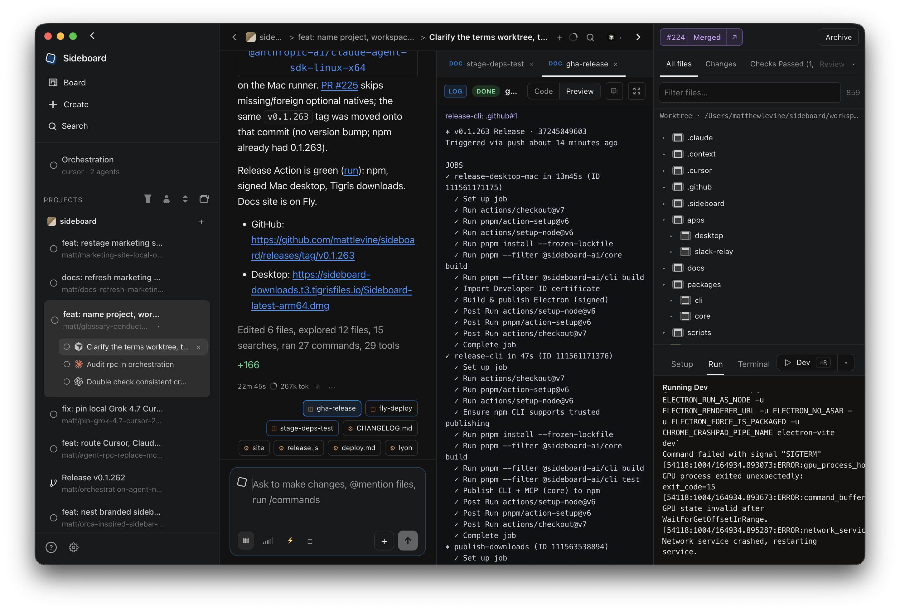
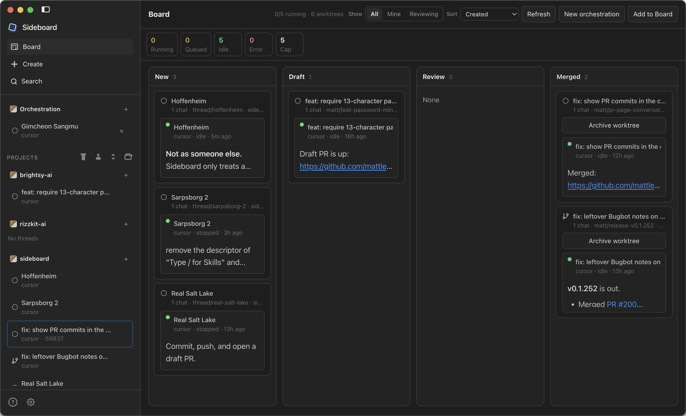

Isolated git worktrees for Claude Code, Codex, OpenCode, and Cursor. A kanban of the whole fleet. An orchestrator that can drive it. Slack, CLI, and MCP so other systems can reach this machine — without a cloud workspace.
npm i -g @sideboard-ai/cli
Apple Silicon · auto-updating · CLI and MCP run without the app

Works with the agents you already pay for
Worktrees are the shared primitive. Sideboard is the layer above them: a board you can see, an orchestrator an agent can drive, and remotes so you are not trapped in one window.
Status, live output, and fan-out across every thread. One agent per worktree, all of them on one board instead of eight terminal tabs. Columns follow the work: New, Draft, Review, Merged.

The orchestrator is an agent too. It can list threads, wait on turns, read diffs, fork worktrees, schedule jobs, and open panes in the desktop. Mechanical control stays on the CLI and costs zero tokens. MCP is for judgment across the fleet.
DM or @mention the orchestrator from anywhere. It can ping a coworker to review a PR a worktree just pushed; their reply comes back as information, not a command. Agents, repos, and VPN-only APIs stay on this machine.
The desktop is one surface. Register the MCP with Claude, Codex, OpenCode, or Cursor and that agent can see the fleet from outside Sideboard. attach drops you into the same session in the native CLI. adopt brings existing worktrees in.
sideboard detect sideboard new --from branch:main --agent claude sideboard send <thread> "add a README note" sideboard diff <thread> sideboard attach <thread> sideboard land <thread>
A worktree chat is repo, agent, and structured data in one view. Artifacts, a JSON Schema rendered as table or form, and the git repo on the far right — without bolting on a CMS.
When Conductor moved the interesting part of a worktree board into a paid cloud, Sideboard began as an open port of the local loop. Then came the pieces that still belong on this Mac: an orchestration tier, a kanban of the fleet, Slack so you can reach it from somewhere else, and CLI / MCP so other systems can drive it — without moving the repo off the network you already sit on.
Conductor is the polished Mac board (and a $50/mo cloud). Orca is the agent IDE — terminals, browser, mobile. Sideboard is the local orchestration layer both of those leave on the table.
Peer-by-peer compare| Job | Typical tools | Sideboard |
|---|---|---|
| Run N agents in isolated worktrees | Conductor, Orca, IDE agents | Yes — on this Mac |
| Orchestrate the fleet, agent-visible | Human board, or a cloud API | MCP + global board, local |
| Stay on the corporate VPN | Cloud sandboxes leave it | Agents run as you, here |
| Reach it from other systems | Product app, or cloud MCP | CLI, MCP, Slack to this Mac |
| Coworker in the loop | Shared cloud workspace | Slack review ping; reply as info |
| Keep going when you step away | Always-on sandbox | Slack + opt-in caffeinate |
| Drop into the native CLI | Weak, or one-way | attach keeps the session |
| Bring existing worktrees in | Stuck, or start over | adopt + Conductor import |
The Mac is the runtime. Everything else is a remote. Register MCP once and any of your agents can see the fleet. Slack is how a phone or a coworker gets in. The CLI is how you script it.
List, send, diff, land — zero tokens. sideboard detect reports the harnesses on your PATH.
claude mcp add --scope user sideboard -- sideboard mcp — then that agent can orchestrate from outside the app.
DM work: check the failing CI. Prefix matches the Mac name. Agents never leave this machine.
DMs and @mentions reach the global orchestrator on this Mac. What stays here: agents, worktrees, repos, and secrets — including anything only reachable on the VPN. What leaves: Slack message text, through the relay.
work: check the failing CI
@sideboard personal: ship it
The machine has to stay awake — Settings → Advanced → Caffeinate while Listen is on. Set up Slack →
Conductor’s free Mac app is a polished human board around local worktrees. Their paid product is cloud sandboxes, multiplayer, a cloud API, and a mobile app. Sideboard keeps orchestration on this machine: MCP, a kanban, Slack to the Mac, CLI. Use Conductor if you want their finished workspace UI or always-on Vercel sandboxes. Use Sideboard if the fleet should stay on the VPN you already sit on.
Orca is an agent development environment — terminals, embedded browser, design mode, many CLI agents, mobile companion, Windows and Linux. Sideboard is not trying to be an IDE. It is the orchestration tier: a board, an agent that can drive other threads, and remotes (Slack, CLI, MCP) so other systems can reach this Mac.
No. Bring the Claude, Codex, OpenCode, or Cursor subscriptions you already have. Sideboard is Apache-2.0. The desktop and CLI are free. You are not renting a sandbox from us.
No — that is the cloud-sandbox trade. Slack and scheduled jobs reach this Mac only while it is awake. Opt in to caffeinate from Settings → Advanced (or from an orchestration chat) when you step away. If you need always-on off-VPN compute, Conductor Cloud and similar sandboxes are the fit.
Yes. npm i -g @sideboard-ai/cli ships the CLI and the stdio MCP server. The desktop is the board and the Slack listener.
You already run several local CLI agents on a Mac — especially one on a corporate VPN — and you want an orchestrator you can see, an agent can drive, and Slack / MCP / CLI can reach. Extra fit when the agent produces structured content or HTML that should sit next to the diff.